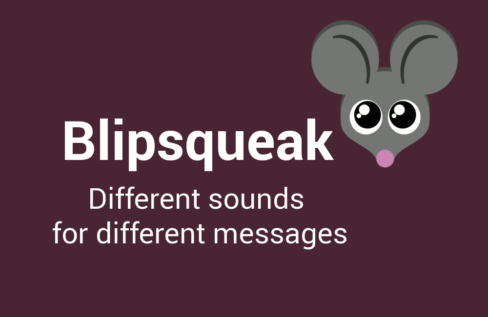
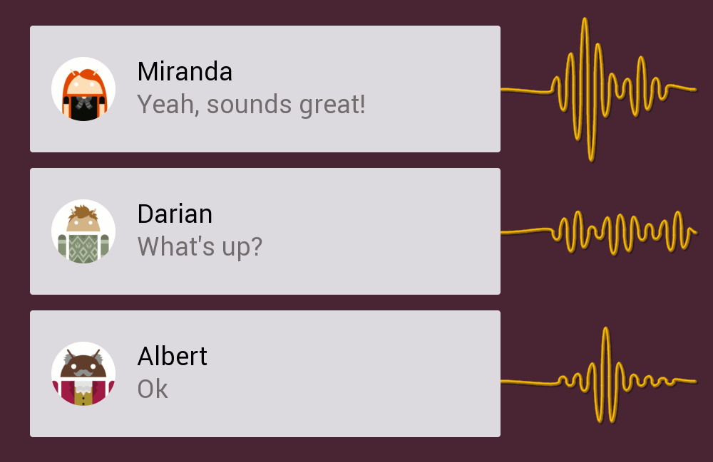
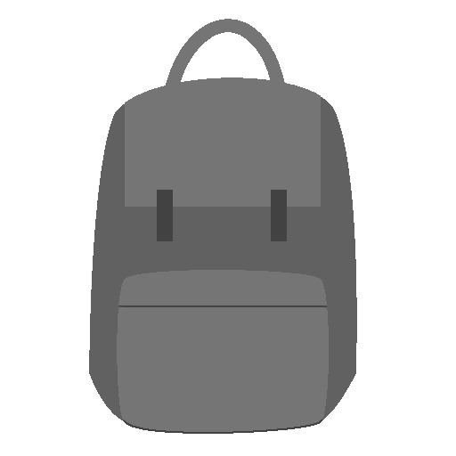
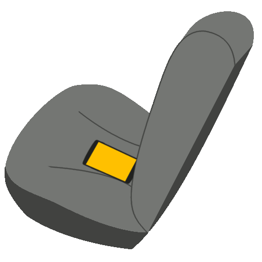
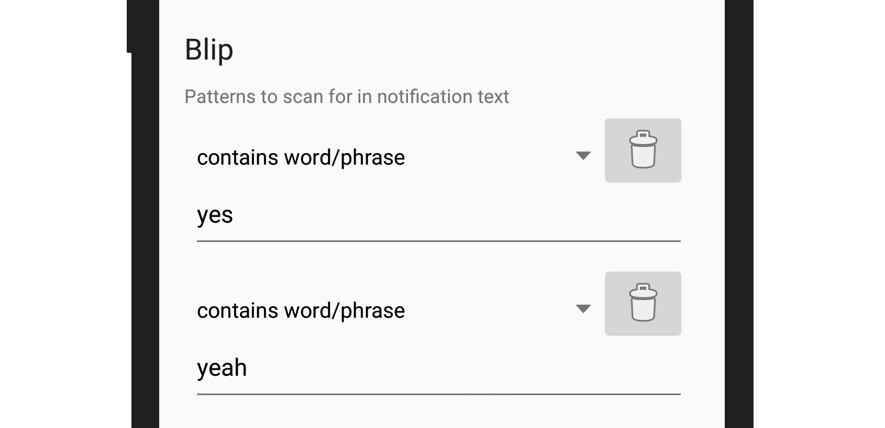
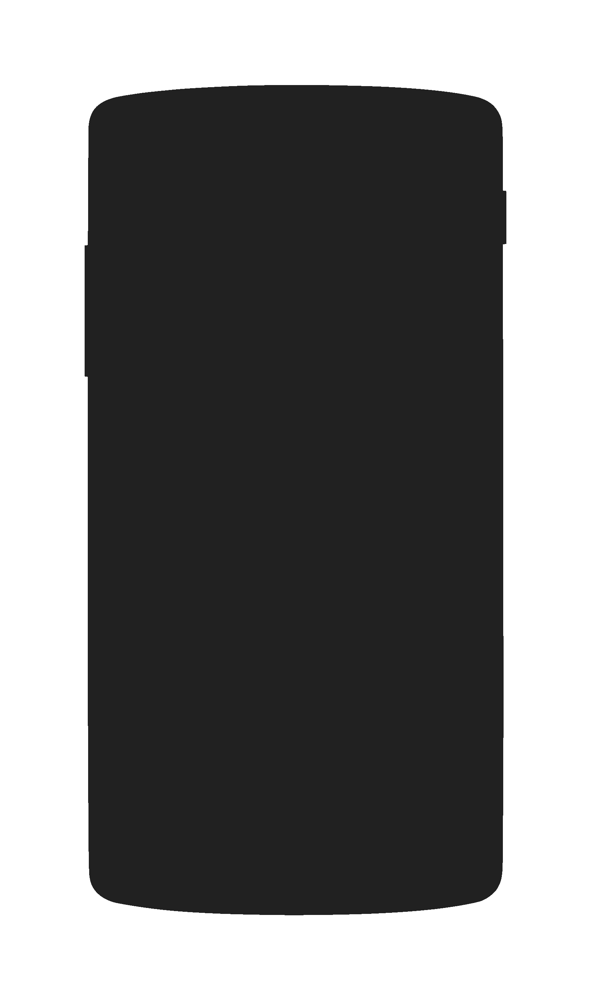
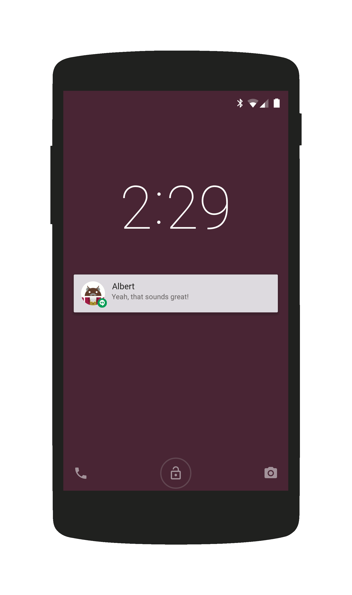

<!DOCTYPE html><html lang="en"></html><head><title>Blipsqueak | Different notification sounds for different messages</title><meta name="viewport" content="width=device-width, initial-scale=1"><link rel="stylesheet" type="text/css" href="//fonts.googleapis.com/css?family=Roboto:400,700"><link rel="stylesheet" type="text/css" href="//yui.yahooapis.com/pure/0.5.0/pure-min.css"><link rel="stylesheet" type="text/css" href="//yui.yahooapis.com/pure/0.5.0/grids-responsive-min.css"><link rel="stylesheet" type="text/css" href="./ext/blueimp-gallery.min.css"><link rel="stylesheet" href="//maxcdn.bootstrapcdn.com/font-awesome/4.1.0/css/font-awesome.min.css"><link rel="shortcut icon" href="./img/favicon/favicon.ico"><link rel="icon" sizes="16x16 32x32 64x64" href="./img/favicon/favicon.ico"><link rel="icon" type="image/png" sizes="196x196" href="./img/favicon/favicon-192.png"><link rel="icon" type="image/png" sizes="160x160" href="./img/favicon/favicon-160.png"><link rel="icon" type="image/png" sizes="96x96" href="./img/favicon/favicon-96.png"><link rel="icon" type="image/png" sizes="64x64" href="./img/favicon/favicon-64.png"><link rel="icon" type="image/png" sizes="32x32" href="./img/favicon/favicon-32.png"><link rel="icon" type="image/png" sizes="16x16" href="./img/favicon/favicon-16.png"><style type="text/css">* {box-sizing:border-box;}
body {background-color:#fafafa; color:#212121;}
.pure-g *:(not:.fa) {font-family:'Roboto', sans-serif !important;}
.pure-g * {text-align:center;}
.pure-u-1 {position:relative;}
.pure-u-1 > p {display:table-cell; vertical-align:middle; text-align:center;}
.pure-img {margin:0 auto;}

.primary {background-color:#A0557A; color:white;}
.primary-dark {background-color:#824563; color:white;}
.primary-darker {background-color:#482635 !important; color:white;}
.dark {background-color:#363636; color:white; z-index:1;}
.accent {background-color:#FFC107; color:black;}

p.padded {padding:50px;}
.spacer {min-height:25vh;}
.halfspacer {min-height:12.5vh;}
.relative {position:relative;}
.float-above {z-index:1000;}

.shadow {
	-webkit-box-shadow: 0 4px 2px -2px rgba(0,0,0,0.5);
	-moz-box-shadow: 0 4px 2px -2px rgba(0,0,0,0.5);
	box-shadow: 0 4px 2px -2px rgba(0,0,0,0.5);
}
.innershadow {
	-webkit-box-shadow: inset 0px 0px 20px 0px rgba(0,0,0,1);
	-moz-box-shadow: inset 0px 0px 20px 0px rgba(0,0,0,1);
	box-shadow: inset 0px 0px 20px 0px rgba(0,0,0,1);
}
.angled {
	-ms-transform: rotate(-30deg);
	-moz-transform: rotate(-30deg);
	-webkit-transform: rotate(-30deg);
	transform: rotate(-30deg);
}

#ideas, #features, .feature, #footer {padding:30px;}
#ideas img {border:1px solid #757575;}

.pure-menu {background-color:#482635 !important;}
.pure-menu a {color:white !important; font-weight:bold; margin:10px 30px;}
.pure-menu a:hover {background-color:#A0557A !important;}
.pure-menu .header {border-bottom: 1px solid #FFC107;}

.blueimp-gallery {font-family:sans-serif;}
.lightup, #pling {opacity:0; position:absolute; top:0; left:0;}
#pling {color:#757575;}

h3 {margin:20px 5vw;}
i {font-family:sans-serif;}</style></head><body><div style="padding:5vh 0;" class="pure-g primary-darker"><div class="pure-u-1 pure-u-md-2-24 pure-u-lg-4-24 pure-u-xl-6-24"></div><div class="pure-u-1 pure-u-md-10-24 pure-u-lg-8-24 pure-u-xl-6-24"></div><div class="pure-u-1 pure-u-md-10-24 pure-u-lg-8-24 pure-u-xl-6-24"></div><div class="pure-u-1 pure-u-md-2-24 pure-u-lg-4-24 pure-u-xl-6-24"></div></div><div class="pure-g primary-darker"><div class="pure-u-1 pure-u-md-10-24 pure-u-lg-10-24 pure-u-xl-11-24"></div><div class="pure-u-1 pure-u-md-12-24 pure-u-lg-10-24 pure-u-xl-7-24 halfspacer"><a href="https://play.google.com/store/apps/details?id=com.blipsqueak.app"></a></div><div class="pure-u-1 pure-u-md-2-24 pure-u-lg-4-24 pure-u-xl-6-24"></div></div><div class="pure-g"><div class="pure-u-1 halfspacer"></div><div class="pure-u-1"><h3>Have you ever wanted to get the gist of messages that you hear come in...</h3></div><div class="pure-u-1 halfspacer"></div><div class="pure-u-1 pure-u-md-1-24 pure-u-lg-5-24"></div><div class="pure-u-1 pure-u-md-22-24 pure-u-lg-14-24"><div id="table" class="pure-u-1 pure-u-md-1-3"><div class="pure-u-1-2 pure-u-md-1">from across the room?</div><div class="pure-u-1-2 pure-u-md-1 relative"></div></div><div id="pocket" class="pure-u-1 pure-u-md-1-3"><div class="pure-u-1-2 pure-u-md-1">inside a pocket?</div><div class="pure-u-1-2 pure-u-md-1 relative"></div></div><div id="carseat" class="pure-u-1 pure-u-md-1-3"><div class="pure-u-1-2 pure-u-md-1">while driving?</div><div class="pure-u-1-2 pure-u-md-1 relative"></div></div></div><div style="height:50vh" class="pure-u-md-1-24 pure-u-lg-5-24"></div></div><div class="pure-g"><div class="pure-u-1 halfspacer"></div><div class="pure-u-1 primary-dark float-above"><h3>With Blipsqueak, you can set different notification sounds for different types of messages</h3></div></div><div class="pure-g primary"><div class="pure-u-1 pure-u-md-1-24 pure-u-lg-3-24"></div><div class="pure-u-1 pure-u-md-12-24 pure-u-lg-10-24 primary float-above"><p class="padded shadow">Create profiles to match the types of messages that you want to hear about</p></div><div class="pure-u-1 pure-u-md-10-24 pure-u-lg-8-24 imgholder"></div><div class="pure-u-1 pure-u-md-1-24 pure-u-lg-3-24"></div></div><div class="pure-g"><div class="pure-u-1 spacer dark innershadow"></div></div><div class="pure-g primary"><div class="pure-u-1 pure-u-md-1-24 pure-u-lg-3-24"></div><div class="pure-u-1 pure-u-md-12-24 pure-u-lg-10-24 primary float-above"><p class="padded shadow">Add a few patterns to check for in the text of the notification</p></div><div class="pure-u-1 pure-u-md-10-24 pure-u-lg-8-24 imgholder"></div><div class="pure-u-1 pure-u-md-1-24 pure-u-lg-3-24"></div></div><div class="pure-g"><div class="pure-u-1 spacer dark innershadow"></div></div><div class="pure-g primary"><div class="pure-u-1 pure-u-md-1-24 pure-u-lg-3-24"></div><div class="pure-u-1 pure-u-md-12-24 pure-u-lg-10-24 primary float-above"><p class="padded shadow">Pick a notification sound</p></div><div class="pure-u-1 pure-u-md-10-24 pure-u-lg-8-24 imgholder"></div><div class="pure-u-1 pure-u-md-1-24 pure-u-lg-3-24"></div></div><div class="pure-g"><div id="fadespacer" class="pure-u-1 spacer dark innershadow"></div></div><div id="notification" class="pure-g"><div class="pure-u-1 pure-u-md-1-24 pure-u-lg-3-24"></div><div class="pure-u-1 pure-u-md-12-24 pure-u-lg-10-24"><p class="padded">... and the next time a matching notification arrives, your sound will play</p></div><div class="pure-u-1 pure-u-md-11-24 pure-u-lg-8-24 relative"><h1 id="pling" class="angled">*Pling*</h1></div><div class="pure-u-1 pure-u-md-1-24 pure-u-lg-3-24"></div></div><div id="features" class="pure-g dark innershadow"><div class="pure-u-1"><h2>Features</h2></div><div class="pure-u-1 pure-u-md-1-2 pure-u-lg-1-5 feature"><strong>Choose which apps to use it with</strong><br><span>Works with any app that posts notifications</span></div><div class="pure-u-1 pure-u-md-1-2 pure-u-lg-1-5 feature"><strong>Bring your own sounds</strong><br><span>Any mp3, m4a, wav, or ogg file</span></div><div class="pure-u-1 pure-u-md-1-2 pure-u-lg-1-5 feature"><strong>Get specific</strong><br><span>Match words, parts of words, characters, emoji, message length, and more</span></div><div class="pure-u-1 pure-u-md-1-2 pure-u-lg-1-5 feature"><strong>Get REALLY specific</strong><br><span>Match any or all of the given patterns - case sensitive or not - and even match based on Java regular expressions</span></div><div class="pure-u-1 pure-u-md-1-2 pure-u-lg-1-5 feature"><strong>Randomized sounds</strong><br><span>If more than one sound is added to a profile, one sound will be chosen at random each time it triggers</span></div><div class="pure-u-1 pure-u-md-1-2 pure-u-lg-1-5 feature"><strong>Delayed sounds</strong><br><span>In case you still want to hear your app- or contact-specific sounds too</span></div><div class="pure-u-1 pure-u-md-1-2 pure-u-lg-1-5 feature"><strong>Backup and Restore</strong><br><span>Transfer your profiles and sounds between devices, even send them to friends</span></div><div class="pure-u-1 feature"><a href="https://play.google.com/store/apps/details?id=com.blipsqueak.app"></a></div></div><div id="idea-header" class="pure-g"><div class="pure-u-1"><h2>A few ideas to get you started</h2><span>Tap/click to enlarge</span></div></div><div id="ideas" class="pure-g"><div class="pure-u-1 pure-u-lg-4-24"></div><div class="pure-u-6-24 pure-u-lg-4-24"><a href="./img/ideas/yes.png"></a></div><div class="pure-u-6-24 pure-u-lg-4-24"><a href="./img/ideas/thanks.png"></a></div><div class="pure-u-6-24 pure-u-lg-4-24"><a href="./img/ideas/ok.png"></a></div><div class="pure-u-6-24 pure-u-lg-4-24"><a href="./img/ideas/tongue.png"></a></div><div class="pure-u-1 pure-u-lg-4-24"></div></div><div id="blueimp-gallery" class="blueimp-gallery"><div class="slides"></div><ol class="indicator"></ol></div><div id="footer" class="pure-g primary-darker innershadow"><div style="padding-top:10vh" class="pure-u-1 spacer"><div class="pure-menu pure-menu-open pure-menu-horizontal"><ul><li><a href="//github.com/mirandaflu/Blipsqueak"><i class="fa fa-github"></i><span> Github</span></a></li><li><a href="//twitter.com/blipsqueak"><i class="fa fa-twitter"></i><span> @blipsqueak</span></a></li><li><a href="mailto:blipsqueakapp@gmail.com"><i class="fa fa-envelope"></i><span> blipsqueakapp@gmail.com</span></a></li></ul></div></div></div><script type="text/javascript" src="//ajax.googleapis.com/ajax/libs/jquery/2.1.3/jquery.min.js"></script><script type="text/javascript" src="./ext/jquery.waypoints.min.js"></script><script type="text/javascript" src="./ext/jquery.stuck.js"></script><script type="text/javascript" src="./ext/blueimp-gallery.min.js"></script><script type="text/javascript" src="./scaling.js"></script></body>